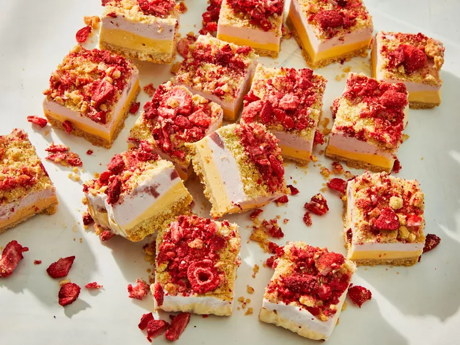

Strawberry Ice Cream Bars

Description
A fruity dessert perfect for the summer! This is a simple recipe with only 5 ingredients for a batch of 16 bars. Be prepared to impress your family and friends at cookouts, family reunions, or birthday parties!
Ingredients
- 2 (5.3-oz.) pkg. pure butter shortbread cookies (such as Walker's)
- 1/4 cup salted butter, melted
- 1 pt. vanilla ice cream
- 1 pt. strawberry ice cream
- 1/2 ounce (about 3/4 cup) freeze-dried strawberries (from 1[1-oz.] pkg.)
Directions
- Preheat oven to 350°F. Line a 9-inch square metal baking dish with 2 sheets of parchment paper, allowing a 2-inch overhang on all sides of dish.
- Set aside 4 of the cookies. Place remaining cookies in a food processor; process until very finely crumbled, about 30 seconds. Transfer crumbs to a medium bowl; stir in melted butter until mixture resembles coarse sand. Press mixture evenly into bottom of prepared baking dish. Bake in preheated oven until crust is just set, about 10 minutes. Remove from oven. Transfer to a wire rack, and let cool completely, about 30 minutes. Meanwhile, remove vanilla ice cream from freezer, and let soften at room temperature about 15 minutes.
- Spread softened vanilla ice cream in an even layer on cooled crust. Transfer to freezer; freeze until ice cream is just set, about 30 minutes. Meanwhile, remove strawberry ice cream from freezer, and let soften at room temperature about 15 minutes.
- Remove baking dish from freezer. Spread softened strawberry ice cream in an even layer on vanilla ice cream layer.
- Roughly chop reserved 4 cookies; sprinkle evenly over strawberry ice cream layer. Roughly chop freeze-dried strawberries; sprinkle evenly over cookie crumble layer. Transfer to freezer; freeze until solid, about 8 hours.
- Remove baking dish from freezer. Using parchment paper overhang as handles, lift ice cream mixture from baking dish; transfer to a cutting board. Cut into 16 bars.
Source: https://www.southernliving.com/recipes/strawberry-shortcake-ice-cream-bars
Back to Home